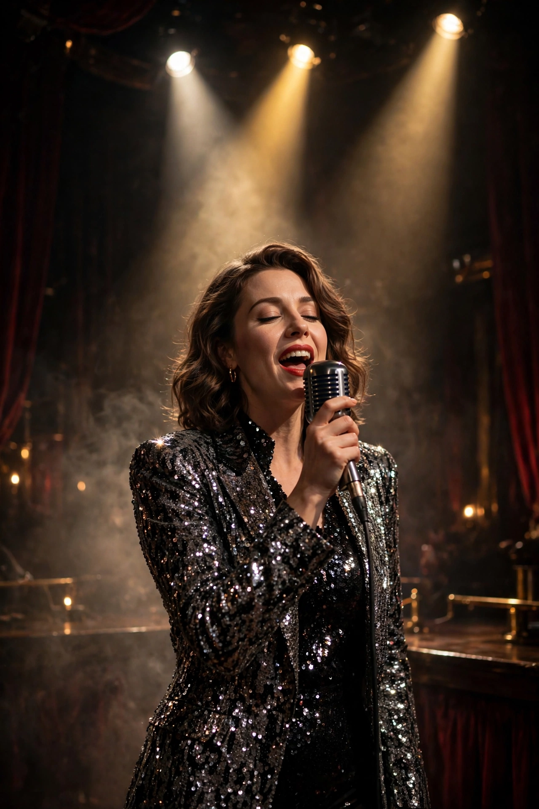

| Liza Minnelli | |
|---|---|
| Born | Liza May Minnelli, March 12, 1946, Los Angeles, California, U.S. |
| Occupations | Actress, singer, dancer |
| Years active | 1949–present |
| Parents | Judy Garland; Vincente Minnelli |
| Awards | Academy Award, BAFTA Award, two Tony Awards, Golden Globe Award, Grammy Legend Award, Emmy Award (EGOT) |

Liza May Minnelli (born March 12, 1946) is an American actress, singer, and dancer. Known for her commanding stage presence and powerful alto singing voice, she is one of the very few performers to have won an Emmy, a Grammy, an Oscar and a Tony (EGOT). The daughter of actress and singer Judy Garland and film director Vincente Minnelli, she became an internationally celebrated star of stage, screen and concert halls.
Minnelli made her screen debut as a toddler in In the Good Old Summertime (1949) alongside her mother. She won a Tony Award at 19 for the Broadway musical Flora the Red Menace (1965), and gained critical acclaim in films such as The Sterile Cuckoo (1969), which earned her a first Academy Award nomination. Her signature triumph came as Sally Bowles in Bob Fosse's film Cabaret (1972), for which she won the Academy Award for Best Actress and a Golden Globe; its songs, including "Cabaret" and "Maybe This Time", became standards of her repertoire. She won an Emmy for the television special Liza with a "Z" (1972), a second Tony for The Act (1978), and starred in the films New York, New York (1977) — whose title song became one of her anthems — and Arthur (1981).
Minnelli continued to tour internationally as a concert artist, recorded the pop album Results (1989) with the Pet Shop Boys, and earned renewed acclaim for her one-woman show Liza's at The Palace... (2008–09), which won the Tony Award for Best Special Theatrical Event. She also appeared as Lucille Austero in the television series Arrested Development.